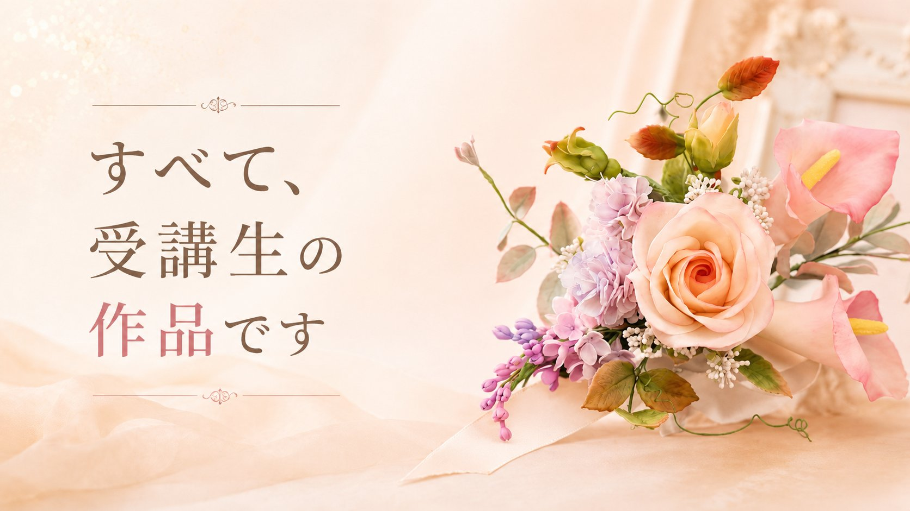
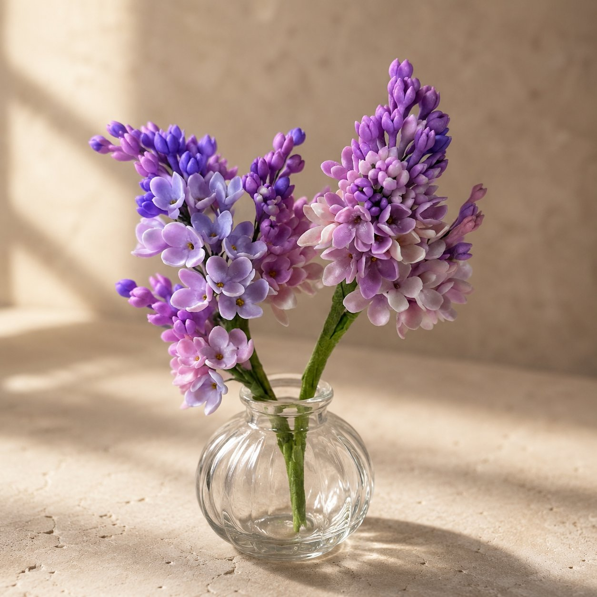
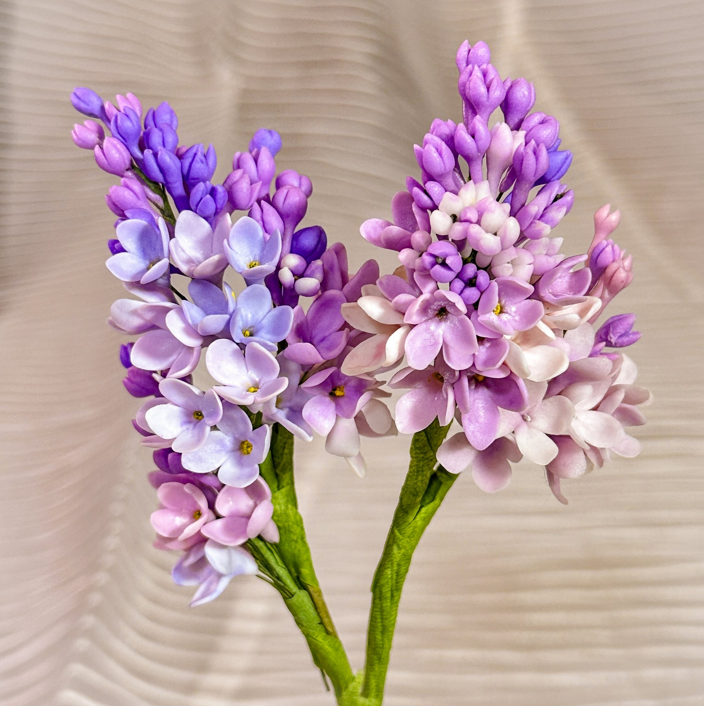
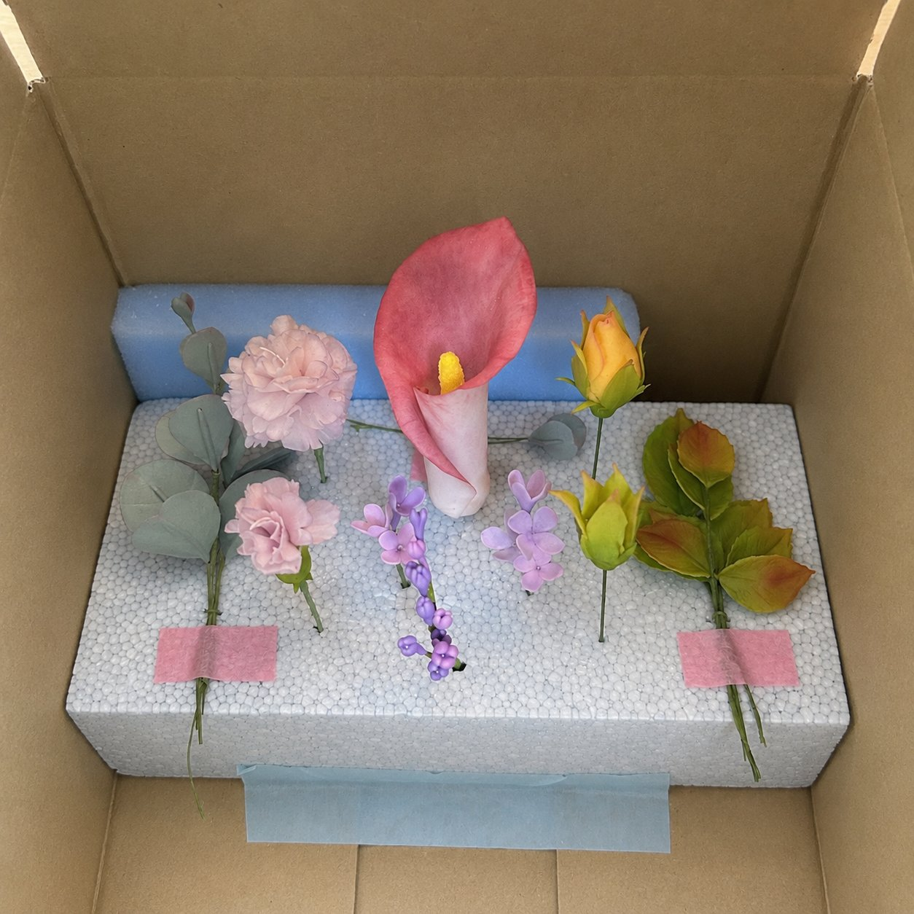
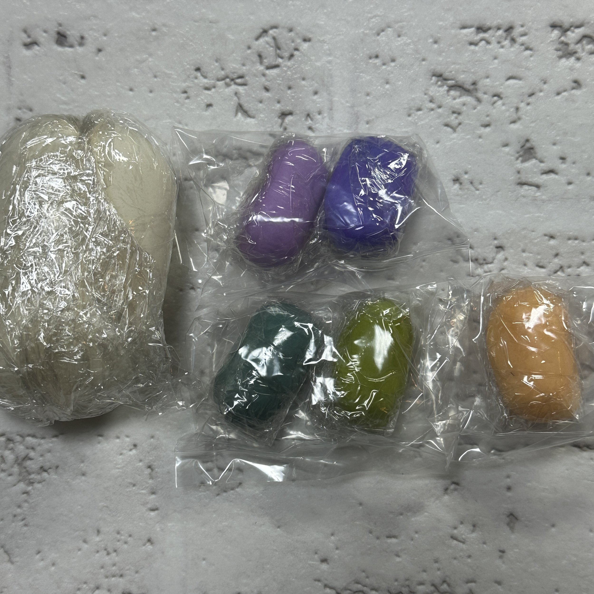
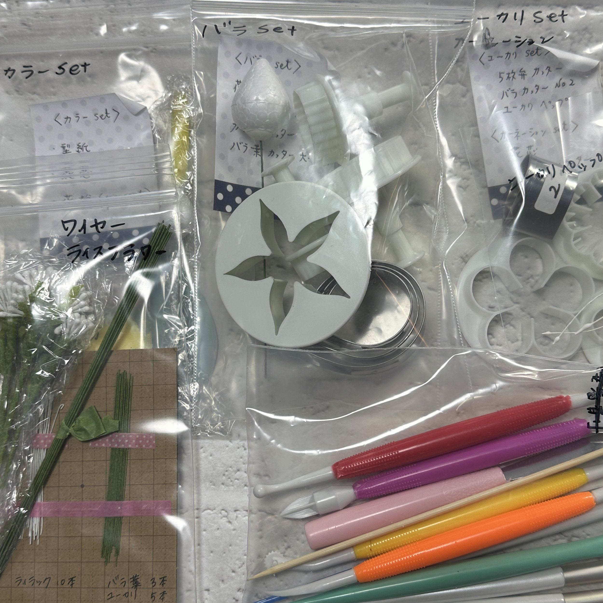
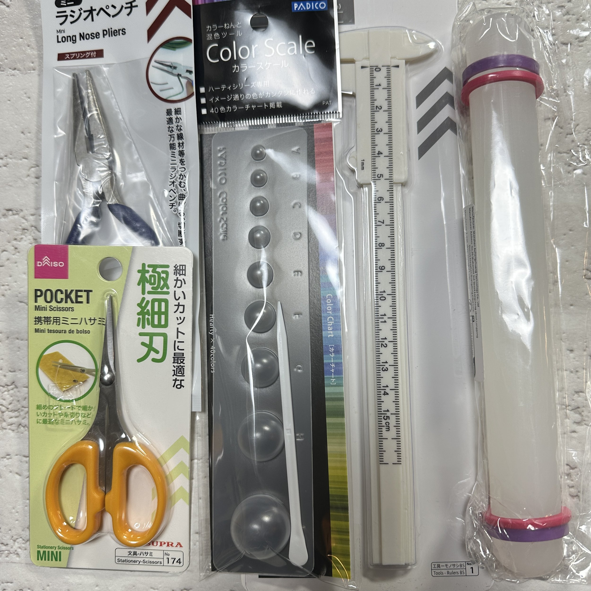

Sugarflower
Lesson
「これ、私が作ったの?」
完成した瞬間、思わずこぼれた言葉です
その記録を、30秒だけご覧ください

※動画のブーケは、本講座「シュガーフラワービギナー講座」で
受講生が完成させた作品です。
7/24の体験レッスンでは、このブーケの一輪目——ライラックを作ります。
半数以上が、シュガーフラワー未経験から
始めています。
ライラック一輪から始める、シュガーフラワー体験レッスン。
必要な道具は、すべてスターターキットでご自宅に届きます。
7月24日（金） 10:00〜13:00｜オンライン
税込7,980円
初めての方のためのレッスンです。
申込締切：7月18日（土）
※体験後に本講座へ進まれる場合は、
今回の受講料を本講座受講料から割引します。


美しい花を見て「いいなあ」と思う。
それで終わるのが、いつものことでした。
この花は、砂糖でできています。
一枚ずつ花びらを作り、色を入れ、房にまとめたものです。
見る側から、つくる側へ。
その最初の一輪が、ライラックです。


まずは一輪から。
でも、そこで終わる講座ではありません。
この入門講座で作るのは、ブーケの中の一輪を担う「ライラック」です。
小さな花が集まり、やわらかな表情を作るライラックは、繊細さと上品さを感じられるお花です。
初めての方が、シュガーフラワーならではの薄さや花びらの表情を学ぶ入口としても向いています。
今回は、ライラック一房と、より美しく仕上げるための葉まで作っていきます。

ライラック

ブーケへ
ただし、この講座は一輪を作って終わるためのものではありません。
一輪を作る技術の先に、束ねる技術があります。
花の向き、高さ、間隔、色のつながり——
整えて初めて、一つの作品になります。
この入門講座は、そこへ進むための、きちんとした入口です。
初心者がつまずく原因は、器用さではありません。
見本・素材・判断基準・伴走。この4つが揃っていないことです。
このレッスンでは、4つすべてを用意しています。
※詳細は画像をタップしてご覧ください
初めての方でも、美しい
繊細な仕上がりが叶う
4つの理由があります。
講師が作った、実物の見本が届く
写真でも動画でもなく、講師が制作した実物のサンプル花材が、キットと一緒にご自宅に届きます。
花びらの薄さも重なりも、360度、手に取って確かめられます。
目指す完成形が、最初から手元にあります。

販売しているものと同じ、オリジナルペースト
この講座のために開発されたオリジナルペーストを、協会で販売しているものと同じ品質で、着色済みでお届けします。
乾燥がゆるやかなので焦らず作業でき、薄く繊細な花びらもゆっくり仕上げられます。
色作りという最初の難関が、そもそもありません。

感覚に頼らない、測れる判断基準
「これくらいの量で」「指先ほど」という曖昧な指示はありません。
ペーストの量はカラースケールで測り、寸法はノギスで確かめる。
工程ごとに「正しい状態」を数字と道具で確認できるので、オンラインでも判断がブレません。
講師と同じ薄さ、同じ形に近づける仕組みです。


オンラインだから、講師の手元が大きく見える
対面の教室では遠くからしか見えない手元が、画面いっぱいに映ります。
あなたの手元も講師が確認しながら進むので、疑問はその場で解決します。
何を揃えたらいいのかわからない。
途中で止まってしまいそう。
オンラインでついていけるか不安。
そんな最初のハードルを、できるだけ減らした状態で始められるようにしています。
日程や受講前のご不安がある方は、
LINEでご確認いただけます
入門講座のステップ
約3時間で、蕾8輪と花8輪——
16のパーツを作り、一房のライラックに仕上げます。
はじめに（15分）
完成形と全体の流れを最初に確認します。
どこへ向かうかを知ってから、手を動かし始めます。
蕾と花をつくる（約105分）
ペーストを整え、花びらに表情をつけ、ワイヤーを通して一輪ずつ仕上げます。
蕾8輪、花8輪。講師のデモを見て、手元の確認を受けながら進みます。
房に組む（30分）
16のパーツを束ね、ライラックらしい房のふくらみに整えていきます。
葉と仕上げ（30分）
お花を際立たせる葉を作り、最後に全体を見ながらフィードバックを受けます。
この入門講座で大切にしていること
一輪を作ることと、ブーケに仕上げることは、別の技術です。
バランス、向き、高さ、花同士の間隔——
束ねて初めて、一つの作品になります。

※これが実際の本講座
『シュガーフラワービギナー講座』で
完成するブーケの写真です。
もし「もっと作ってみたい」
と感じたら
その先に、
全4回でブーケの完成を目指す
本講座があります。
実際に受講された方からの
メッセージ
「サンプルが一番大きかった」
ビギナー講座の受講生は約40名。
半数以上が、シュガーフラワーは初めてという方です。
そのほとんどが、ブーケの完成までたどり着いています。
指導は、実績と経験のある
講師が行います
この講座を担当するのは、
エコールシュクレ主宰の
平川かなえ先生です。
日本シュガーアートドール協会
シュガーフラワー専任講師。
目白大学短期大学製菓学科
シュガークラフト講師。
つくば栄養医療調理製菓専門学校
シュガークラフト講師として、
長く指導に携わってこられました。
1999年、英国ブルックランズ
カレッジ（日本開催校）の
シュガークラフトコースを
修了。
英国生まれのこの技術と、
25年以上向き合ってきました。
2024年には、国内最大級の
洋菓子コンテスト
『ジャパンケーキショー東京』の
シュガークラフト工芸菓子部門で、
部門最高賞である
連合会会長賞を受賞しました。
高い技術を持つだけではなく、
初めての方が迷わず進めるように、
順番と流れを整えて指導して
くださる先生です。
シュガーフラワーは、
時間をかけるほど美しくなる
手仕事です。
早さを競う必要も、
仕事にする必要もありません。
本格的な技術を、
本格的なまま学べます。


▼ 入門講座「ライラック」
のご紹介（動画）
ご受講について
大人のためのシュガーフラワー
入門講座
「ライラック」
受講料
税込
7,980円
※5,500円相当のスターターキット込み
開催日程
7月24日（金）10:00〜13:00
※制作内容：ライラック一房と葉
※3時間です。
申込締切：7月18日（土）まで
※キット発送のため
少人数開催です。
丁寧なサポートを大切にしているため、
人数を絞ってご案内しています。
この講座には、ライラック製作レッスンに
加えて、5,500円相当のスターター
キットが含まれています。
今回お届けするスターターキットは、
その後の「シュガーフラワー
ビギナー講座」でも
そのままお使いいただけます。
さらに、入門講座ご受講後に
本講座へ進まれる場合は、
今回の受講料を
本講座の受講料から
割引いたします。
つまり、今回の体験は
その場限りのお試しではなく、
本格的に学ぶための入口です。
お申し込み前にご確認ください
- LINEにご登録いただくと、申込リンクとご案内をすぐにお送りします。
- お申し込み（決済）はMOSHのページで完了します。
- 決済完了後、スターターキットをご自宅へ発送します。
- キット発送後のキャンセルはお受けできません。
- 当日ご都合が悪くなった場合は、事前にご相談ください。
日程や受講前のご不安がある方は、
LINEでご確認いただけます
お申し込みはMOSHのページで完了します。
決済完了後、スターターキットをご自宅へ発送します。
▼ スターターキットのご紹介（動画）
お届けするキット内容

お申し込み後の流れ
LINE登録・お申し込み
LINEにご登録いただくと、すぐに申込リンクが届きます。
MOSHで直接お申し込みいただくことも可能です。
決済・キット発送
決済完了後、スターターキットをご自宅へ発送します。
オンライン受講
キット到着後、7月24日にオンラインで入門講座をご受講いただきます。
スマホだけでもご受講は可能です。
ただ、できればパソコンとスマホの
両方があると、手元を見せたり、
お顔を見て話したりしやすくなります。
よくある質問
まだ申込までは迷う方へ
入門講座が気になっているけれど、もう少し確認してから決めたい方は、
LINEでご相談いただけます。
※入門講座に申し込むかどうかは、
LINE登録後にゆっくりご検討いただけます。
一輪で終わらない
世界があります。
シュガーフラワービギナー講座（学ぶ）
全4回・計14時間で、複数の花を作り、
一つのブーケとして完成させることを目指す本講座。
華俱楽部（続ける）
受講者は無料で参加できる、週1回のオンラインアトリエ。
講師が制作しているZoomが毎週開いていて、参加・見学・質問すべて自由。
義務は何もありません。学んで終わり、にはなりません。
日本シュガーアートドール協会（深める・つながる）
月1回の勉強会で、シュガークラフト全体を長く学び、
同じものを美しいと思う人とつながる場所（月1,100円）。
仕事にしなくても、本格的に学んでいい。
これからの人生に、もうひとつの美しい教養を。

講師の平川は、この手仕事とともに
25年以上を過ごしてきました。
大学で教え、コンテストに挑み、
今も毎週、誰かと花を作っています。
シュガーフラワーのない人生は、
考えられなかった——
私は、退屈を知らない。
まだ日本では、知る人の少ない世界です。
その入口が、一輪目のライラックです。